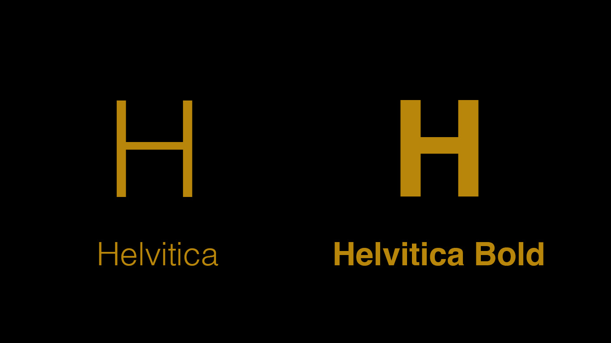
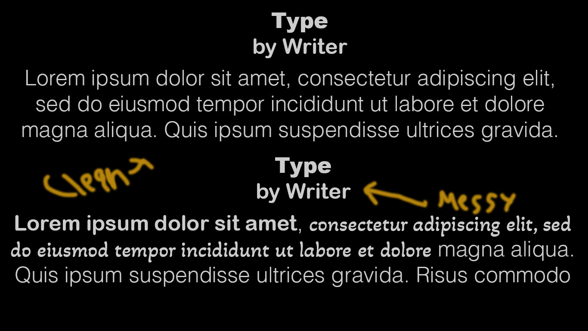
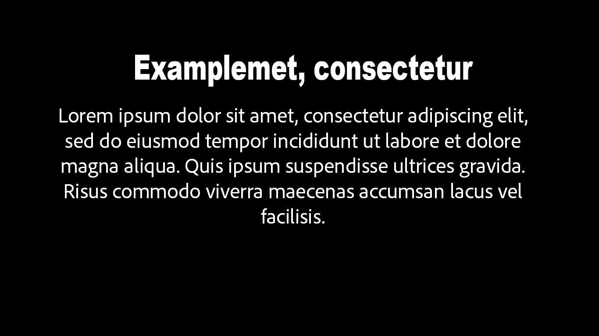
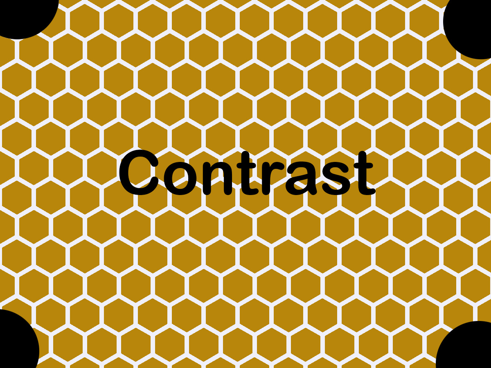
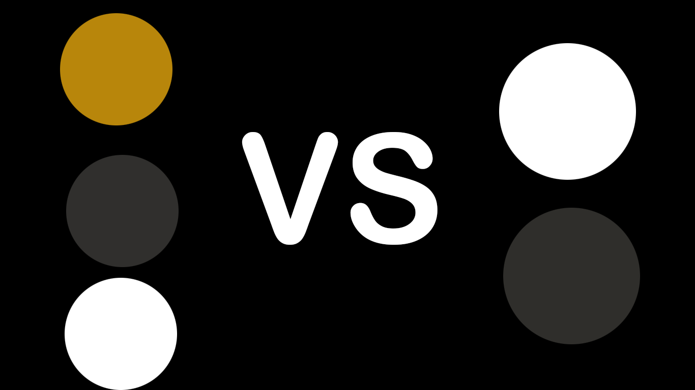
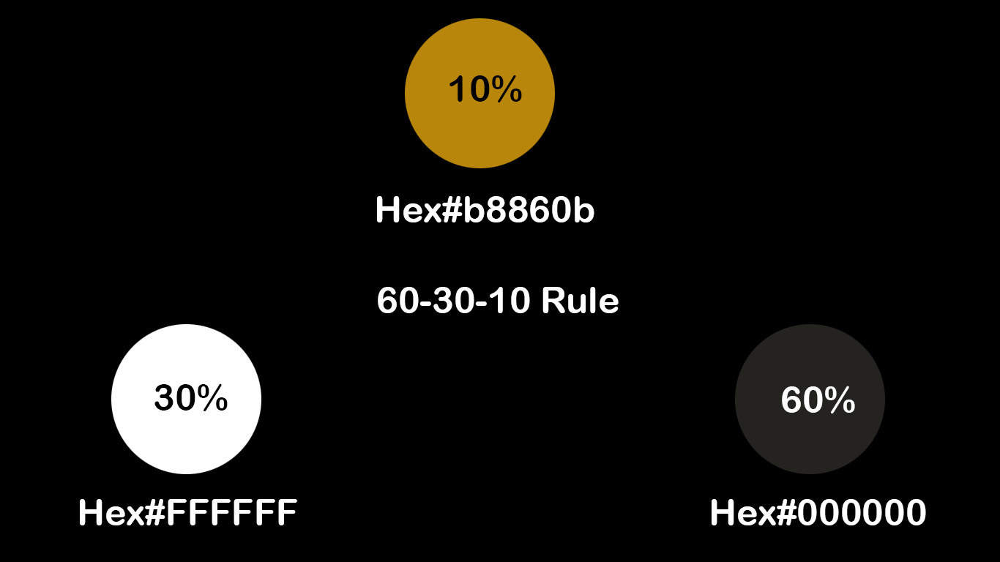

Let’s talk about the elephant in the room first. Font vs typeface, what’s the difference? Which is correct? The terms typeface and font are sometimes used interchangeably which can be a little confusing. A typeface is a collection of fonts while a font refers to a specific style or weight within a typeface family. So let’s put this context with an example. Helvetica is a typeface. But Helvetica Bold is a specific font within the Helvetica typeface family.

Just like choosing a color palette, it can be easy to get carried away with all the options available to use for your design. One of good rules of type is to stick to about 2–3 different typefaces total for a design. Now of course this might vary depending on what you are designing but it’s a good rule of thumb.

One of these ways to choose fonts is to choose a pair of opposites. A good example of this is to use a big and bold serif for your headline and a nice traditional serif typeface for the body copy. Take a look at this example, to see this tip in action.

Contrast can be achieved through color, shape, size, or similar properties of elements, and refers to the differences between them. Color contrast is often the first thing people think of, but differences in the sizes of elements, their shape, or some other property also create contrast. Contrast serves two very important functions. First, it allows you to make elements stand out from one another. A complete lack of contrast would result in a design that’s simply a single background color with no other visible elements — not exactly a functional design. A design where you can see different elements automatically has some level of contrast. The second important function of contrast is accessibility. Sufficient contrast between elements, especially text and its background, is vital for creating an accessible design. People with vision impairments can have a difficult time reading text on a screen that is too small or does not have sufficient color contrast. There are accessibility tools available for checking that your designs have sufficient color contrast for accessibility purposes.

Variety is the spice of life, right? The same goes for design. While repetition adds a sense of harmony to your design, variety keeps it interesting and prevents users from getting bored. Create variety by adding unique or unexpected elements to your designs. Variety can be used to draw the user’s attention to specific elements or areas of the design, and make them stand out.

For the paragraphs I used Fira Sans normal
